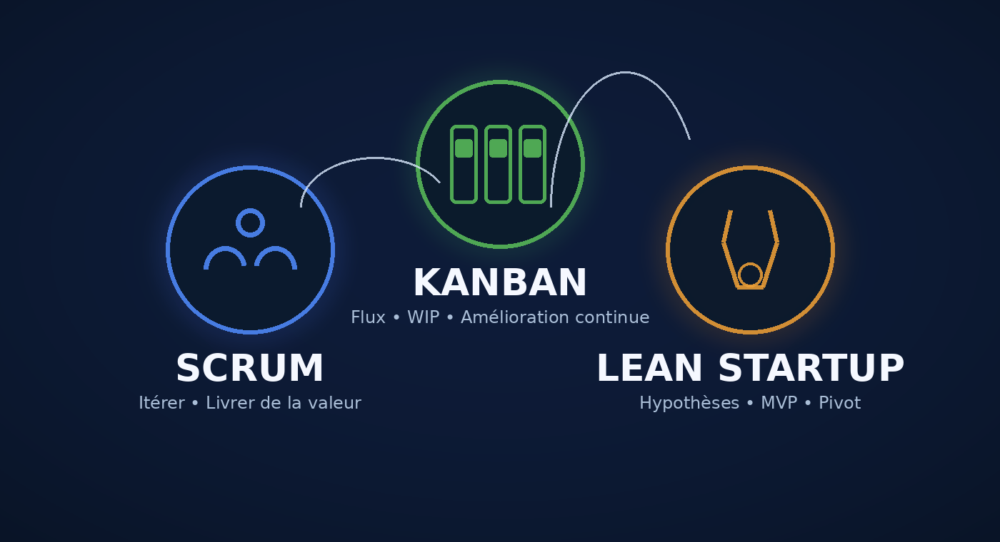

Scrum
Maîtriser le framework, les responsabilités, les événements, les artefacts, la valeur et l’empirisme.
Sur devis
En parlerFormations pratiques, diagnostics de maturité et accompagnement pour aider les équipes à mieux créer de la valeur, collaborer et s’adapter.
Conseil • Formation • Diagnostic • Ateliers • by Twagirumukiza

Des parcours orientés pratique, avec cas professionnels, ateliers et mises en situation.
Maîtriser le framework, les responsabilités, les événements, les artefacts, la valeur et l’empirisme.
Visualiser le flux, limiter le WIP, réduire les blocages et améliorer le système de travail.
Tester les hypothèses, expérimenter, mesurer l’apprentissage et décider avec moins de risque.
Des programmes sur-mesure pour entreprises, écoles supérieures et centres de formation, avec une forte place donnée aux ateliers et à la mise en situation.
Comprendre et appliquer Scrum pour structurer une équipe, cadencer les livraisons et maximiser la valeur perçue par les utilisateurs.
Mettre en place un système Kanban pour fluidifier l’activité quotidienne, stopper le multitâche et améliorer l’efficacité collective.
Sécuriser le lancement d’un nouveau produit, service ou projet grâce à une démarche de test, mesure et apprentissage rapide.
Interventions en intra ou inter-entreprise, cours, TD, ateliers projets et jurys de soutenance pour des cycles Bachelor, Master ou formation continue.
Les contenus peuvent être adaptés au contexte, au public et aux objectifs. Les interventions font l’objet d’une proposition sur-mesure.
Tarification adaptée au format, à l’effectif et au niveau de personnalisation. Proposition sur-mesure sous 48h.
Échanger sur une formationUn diagnostic par méthode pour identifier vos forces, vos axes de progression et le parcours de formation adapté.
Fondamentaux, pratiques, situations et amélioration continue.
Commencer le diagnosticHypothèses, MVP, expérimentation, métriques et pivot.
Commencer le diagnosticValeur, collaboration, adaptation, culture et apprentissage.
Commencer le diagnosticUne seule bonne réponse, correction immédiate, explication pédagogique, score final et badge de réussite.
Flux, WIP, métriques, politiques explicites et amélioration continue.
Commencer le quizHypothèses, MVP, expérimentation, pivot et métriques actionnables.
Commencer le quizCulture Agile, collaboration, valeur, feedback et adaptation.
Commencer le quizAgile.tips est porté par Twagirumukiza, formateur et consultant indépendant, avec une approche orientée vers l’action : comprendre les méthodes, les expérimenter et les relier aux problématiques réelles des organisations.
En 2018, j’ai obtenu un certificat « Méthodes agiles de gestion et amorçage de projet », après une formation de 7 mois à Simplon.co. Cette formation a constitué une étape structurante dans mon parcours autour des méthodes Agile, de la gestion de projet et de l’apprentissage par la pratique.
Depuis, je mobilise ces approches dans mes activités de formation, d’accompagnement et de conseil, avec une attention particulière portée à la compréhension des enjeux métier, à la collaboration et à l’amélioration continue.
Un échange de 30 minutes pour comprendre votre contexte, vos objectifs et voir quelle formation ou quel accompagnement est pertinent.
Choisissez directement un créneau dans mon agenda Cal.com.
Réserver mon créneau →Vous souhaitez former une équipe ? Nous pouvons adapter le contenu à votre organisation et à vos problématiques.
Échanger sur mon besoinUne logique simple pour transformer la formation en résultats opérationnels.
Les principes et concepts essentiels.
Ateliers, simulations et cas réels.
Diagnostic de maturité et feedback.
Formation et plan d’action adaptés.
Réservez directement un échange de 30 minutes pour parler de votre contexte.